Naturwissenschaften
Materie, Energie und Kräfte
Learning Material für Prüfungsvorbereitung
Materie, Energie und Kräfte
Learning Material für Prüfungsvorbereitung
English
Deutsch
English
Deutsch
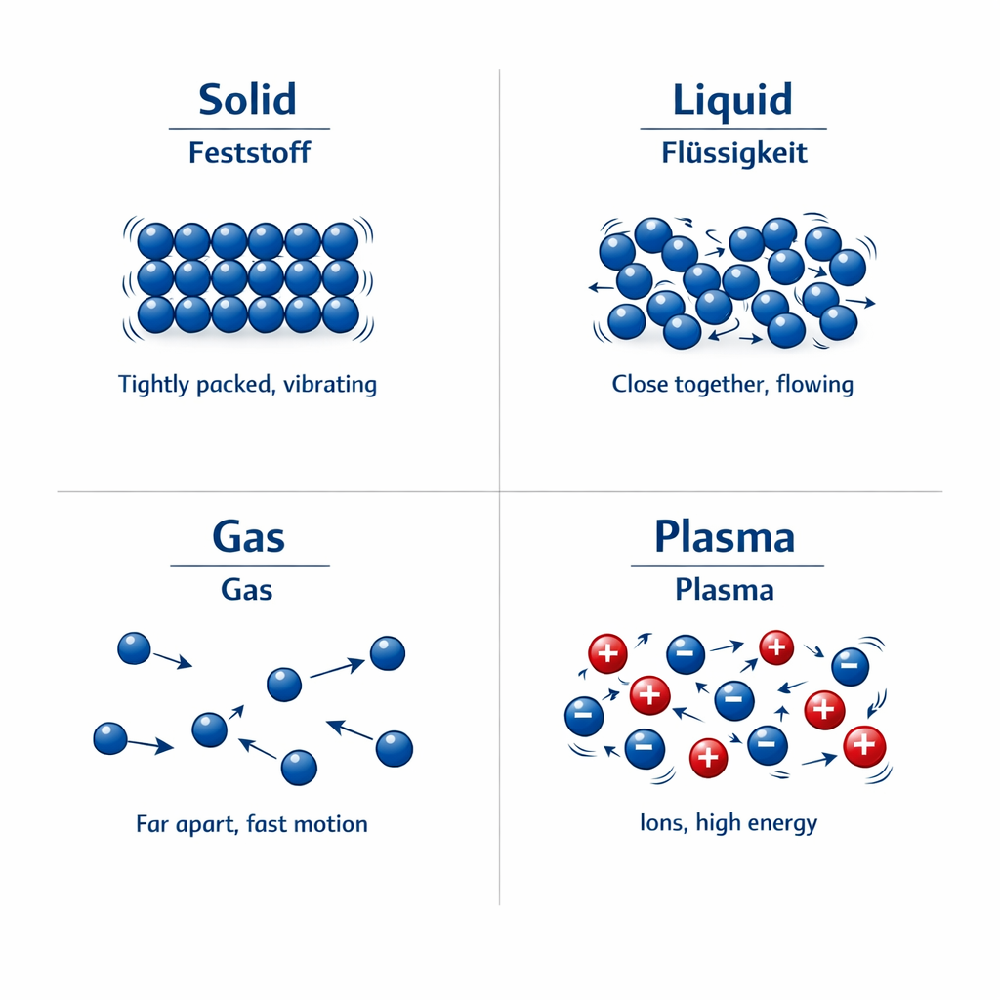
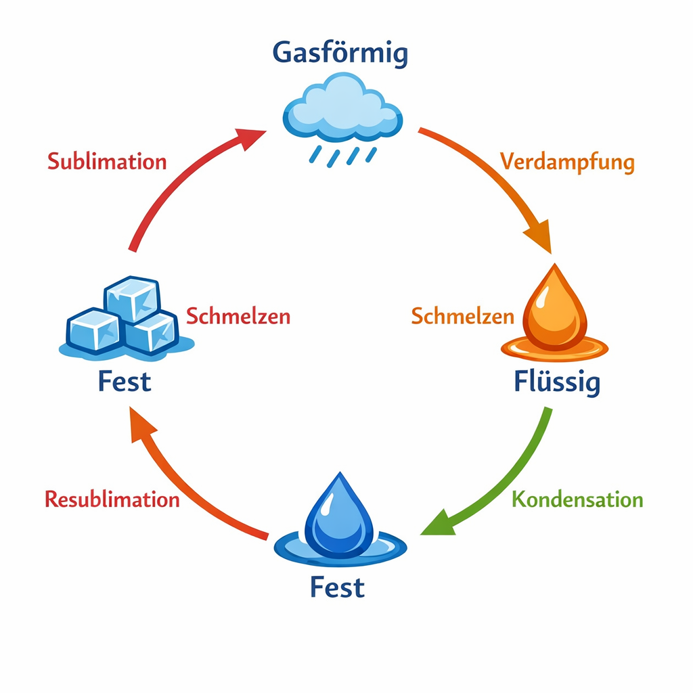
| Element | Melting Point (°C) | Boiling Point (°C) | Schmelzpunkt (°C) | Siedepunkt (°C) |
|---|---|---|---|---|
| Helium [He] | -272 (approx.) | -269 | -272 (ca.) | -269 |
| Nitrogen [N] | -210 | -196 | -210 | -196 |
| Water [H₂O] | 0 | 100 | 0 | 100 |
| Lead [Pb] | 327 | 1749 | 327 | 1749 |
| Tungsten [W] | 3422 | 5555 | 3422 | 5555 |
Formula: ρ = m / V
SI Unit: kg/m³
Formel: ρ = m / V
SI-Einheit: kg/m³
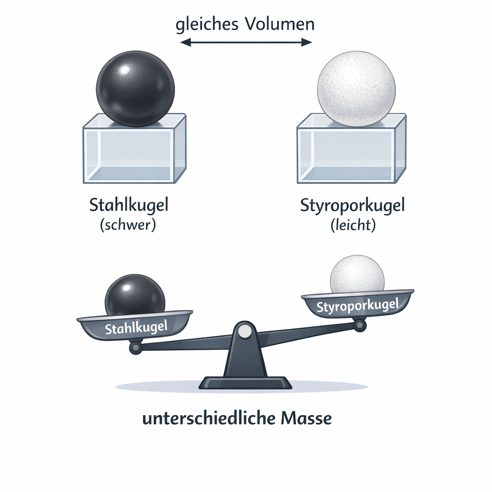
Examples (at 20°C):
Beispiele (bei 20°C):
Materials: Scale, ruler, matchboxes
Materialien: Waage, Lineal, Zündholzschachteln
Electrical conductance G: How well a conductor conducts electric current. Unit: Siemens [G] = S
Elektrischer Leitwert G: Wie gut ein Leiter Strom leitet. Einheit: Siemens [G] = S
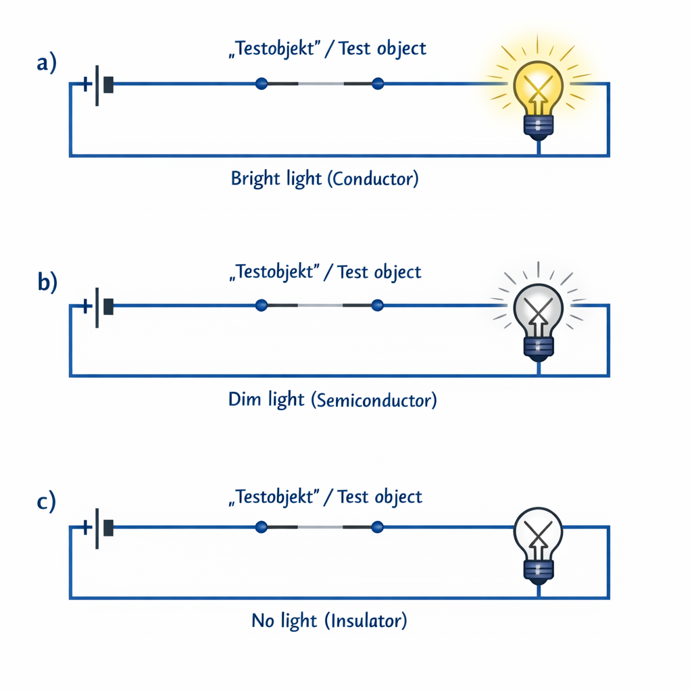
How electrical conduction works:
Wie elektrische Leitung funktioniert:
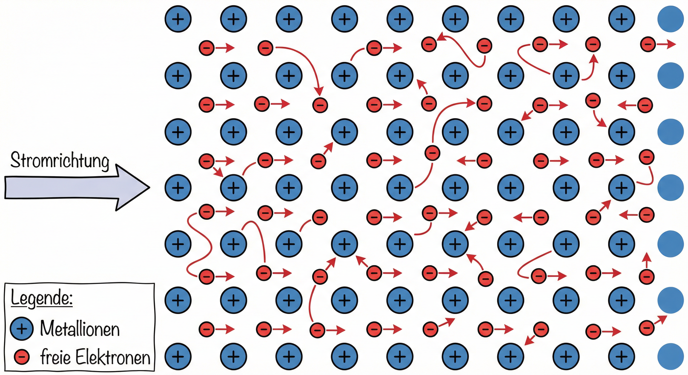
English
Unit: Joule (J)
1 J = 1 Nm = 1 Ws
Deutsch
Einheit: Joule (J)
1 J = 1 Nm = 1 Ws
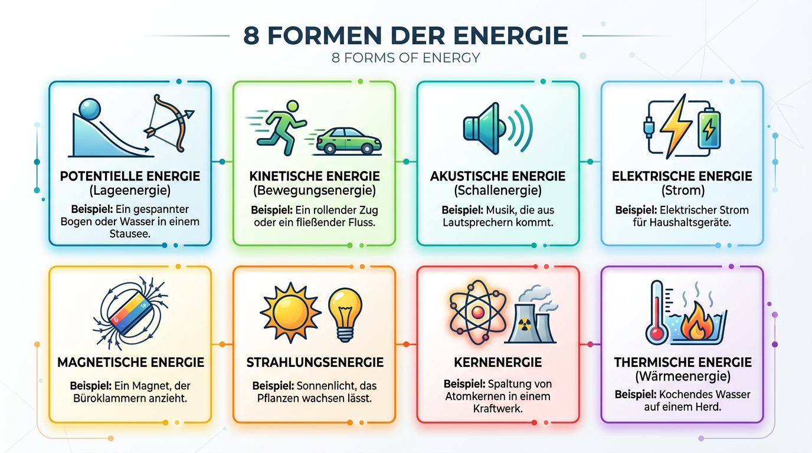
Forms of Energy:
Formen der Energie:
English
Effects of a Force:
Deutsch
Wirkungen einer Kraft:
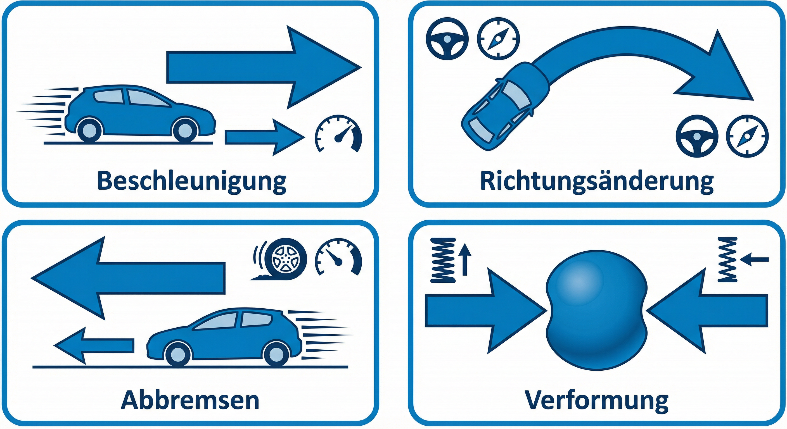
Formula: F = m × a
F = force (N), m = mass (kg), a = acceleration (m/s²)
Unit: Newton 1 N = 1 kg·m/s²
Formel: F = m × a
F = Kraft (N), m = Masse (kg), a = Beschleunigung (m/s²)
Einheit: Newton 1 N = 1 kg·m/s²
English
Formula: FG = m × g
g = 9.81 m/s² ≈ 10 m/s² on Earth
Deutsch
Formel: FG = m × g
g = 9,81 m/s² ≈ 10 m/s² auf der Erde
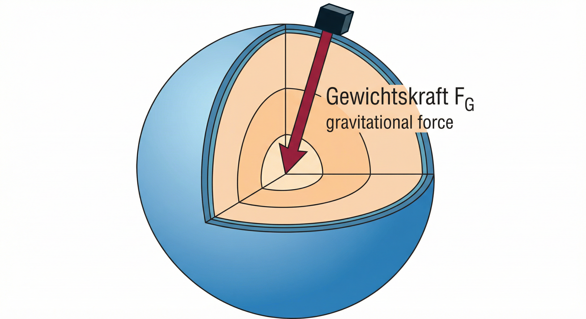
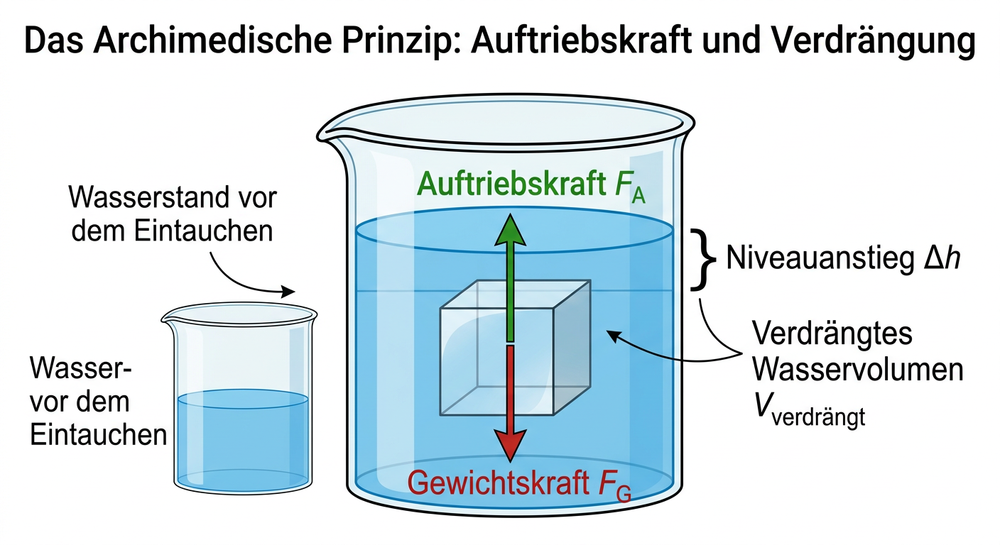
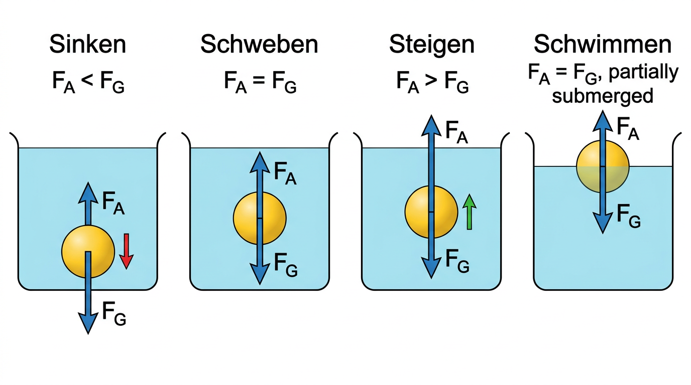
| Condition | Force | Density | Example | Zustand | Kraft | Dichte | Beispiel |
|---|---|---|---|---|---|---|---|
| Sinking | FA < FG | ρfluid < ρbody | Stones | Sinken | FA < FG | ρFl < ρK | Steine |
| Hovering | FA = FG | ρfluid = ρbody | Fish | Schweben | FA = FG | ρFl = ρK | Fisch |
| Rising | FA > FG | ρfluid > ρbody | Submarine | Steigen | FA > FG | ρFl > ρK | U-Boot |
| Swimming | FA = FG | ρfluid > ρbody | Boat | Schwimmen | FA = FG | ρFl > ρK | Boot |
English
Deutsch
| Sub-discipline | Greek Root | Subject | Teildisziplin | Griech. Wurzel | Gegenstand |
|---|---|---|---|---|---|
| Zoology | zóon = animal | Animals | Zoologie | zóon = Tier | Tiere |
| Botany | botaniké = plant | Plants | Botanik | botaniké = Pflanze | Pflanzen |
| Microbiology | mikrós = small | Microorganisms | Mikrobiologie | mikrós = klein | Kleinstlebewesen |
| Ecology | oikos = household | Relationships to environment | Ökologie | oikos = Haushalt | Beziehungen zur Umwelt |
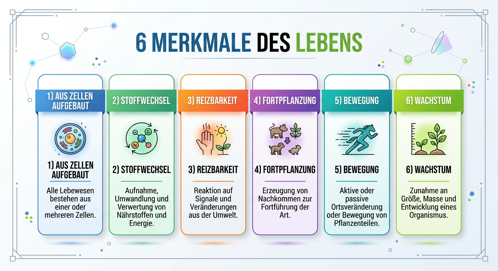